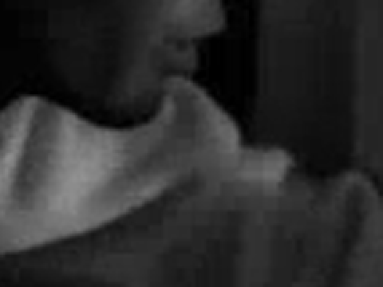
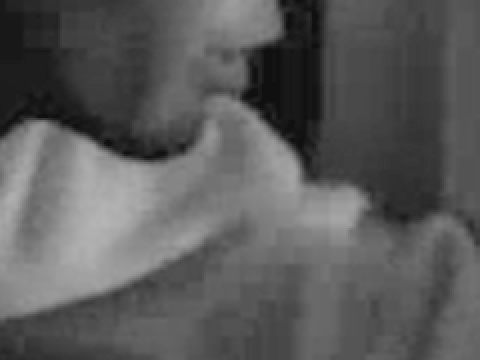
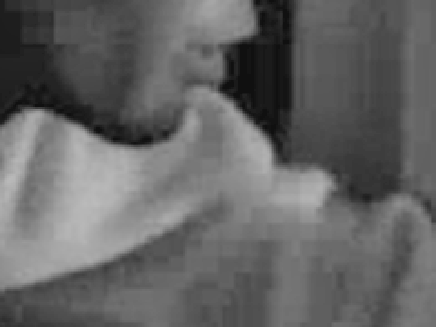
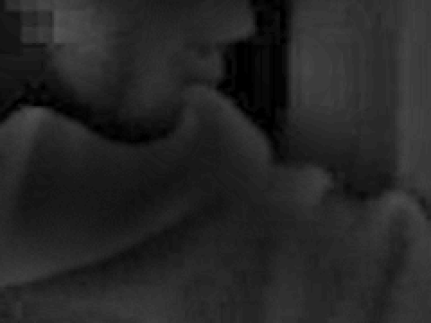

Retinex r4 appends our sigma to its defaults: build 6bfbdd42 on Windows too
Outcome: fixed in the deps scripts; ships with the next deps version (1.18.0-rc5 or later).
Shadow Detail calls retinex.MSRCP(sigma=[X]). Windows shipped the r4 release DLL, and r4's argument
parser starts the sigma list from its defaults {25, 80, 250} and appends ours, so Windows ran a four-scale retinex
[25, 80, 250, X]. macOS and Linux build 6bfbdd42, the one commit after r4 ("Fix unexpected appending when
sigma is specified"), and run [X]. At the default sigma (100) the two pictures are
9–11 8-bit levels apart on average, up to 34, and on Windows the sigma slider moved the picture
only a seventh as far. Windows now builds 6bfbdd42 from source with Zig, like task #98's plugins; macOS and Linux
output is unchanged byte for byte.
Windows Shadow Detail output changes by about 10 levels at the default: say so in the release notes. No built-in preset turns Shadow Detail on.
1. The bug, in the source
VapourSynth-Retinex has four tags. r4 (f7abea51, 2018-12-27) is the last, and the only one with a
Windows binary (Retinex-r4.7z). One commit follows it, 6bfbdd429159c85075dc4b08e0ac4e706470916b
(2021-10-18); its whole change is one initialiser in include/MSR.h:
- std::vector<double> sigma = MSRDefault.sigma; // r4: starts as {25, 80, 250}
+ std::vector<double> sigma;
The parser then runs sigma.push_back(...) for each value passed. MSRKernel
multiplies (I / Gσ(I) + 1) over every entry and divides the log by the count, so r4 runs a
four-scale retinex where we asked for one. The template always passes sigma=[{{SHADOW_SIGMA}}]
(default 100, range 1–500), so no template change can avoid it: r4 cannot be told to drop its defaults.
2. How big the difference is
Because nothing else differs between r4 and 6bfbdd42, MSRCP(sigma=[25, 80, 250, X]) on the
fixed build is what r4 gives for sigma=[X]. Checked directly: the r4 tag built on the
same machine gives exactly the emulated numbers (synthetic picture: 160.054 both ways; slider reach on
f3: 10.04 both ways; data/measure-macos-arm64-r4.json). Template thresholds
(lower_thr = upper_thr = 0.001), luma only, as the template runs it:
| sigma | depth | f3: mean / max | f8: mean / max | f14: mean / max |
|---|---|---|---|---|
| 100 (default) | 8-bit | 10.65 / 30.0 | 10.15 / 34.0 | 8.87 / 31.0 |
| 100 (default) | 10-bit | 10.62 / 29.9 | 10.12 / 33.7 | 8.85 / 30.9 |
| 25 | 8-bit | 17.41 / 61.0 | 13.28 / 67.0 | 15.74 / 60.0 |
| 25 | 10-bit | 17.36 / 60.8 | 13.24 / 66.8 | 15.70 / 59.8 |
| 250 | 8-bit | 8.76 / 34.0 | 7.44 / 42.0 | 11.01 / 48.0 |
| 250 | 10-bit | 8.74 / 34.4 | 7.42 / 41.4 | 10.98 / 47.9 |
Mean and max absolute difference between 6bfbdd42 and r4, in 8-bit levels. Limits: three frames of one clip, luma only, a mean that says nothing about where the difference sits (it is spread across the frame, see §3). It does not say which picture is better: r4's extra scales are a different filter, not a broken one. The point is that the same job differed by OS.
The slider barely worked on Windows
| frame | 6bfbdd42: sigma 1 → 500 | r4: sigma 1 → 500 | 6bfbdd42: 25 → 250 | r4: 25 → 250 |
|---|---|---|---|---|
| f3 | 89.38 | 10.04 | 33.38 | 7.97 |
| f8 | 73.54 | 10.19 | 26.96 | 7.26 |
| f14 | 101.66 | 13.46 | 34.91 | 8.61 |
Mean absolute change of the picture, 8-bit levels, as the Shadow Detail sigma moves. Under r4 the user's sigma is one of four scales, so the slider's whole range moves the picture 10–13 levels where it moves it 74–102 elsewhere.
3. What it looks like








4. The fix
- One commit everywhere.
RETINEX_COMMIT(task #110 pinned macOS/Linux to it) and$RetinexCommitindownload-deps-windows.ps1; a push-gate test fails if the three disagree. - Windows builds it with Zig (section 4b6): the five C++14 sources, R78's API 3 headers under
vsinc\vapoursynth\(Retinex includes<vapoursynth/VapourSynth.h>),-O3 -ffp-contract=off -mcpu=x86_64, no FFTW, one build for both CPU tiers. The r4 7z entry is gone. Cross-compiled on the M1 with the script's Zig (0.15.2) as a check: a 446 KB PE32+ DLL that exportsVapourSynthPluginInitand imports only the UCRT and KERNEL32. It has not been run here;package-deps-windows.ps1loads every plugin undervspipe.exebefore zipping, and the push-gate test runs it. - A marker, no code.
patches/retinex-6bfbdd4-vapourbox-marker.patchappends(VapourBox: 6bfbdd42, sigma not appended, task #113)to the plugin's description (core.retinex.name), as task #98 did: API 3 plugins report no version. Every script replaces an unmarked binary (Windows: r4's DLL from an earlier run) and fails if the marker is missing afterwards. With the patch, macOS arm64's output is byte-identical to rc4's libretinex (MD5 of eight outputs at 8 and 16 bits,hashesin the two JSON files).
5. The test
vapoursynth_integration_test.dart, group retinex sigma (task #113), push gate, on a
320x240 ramp with fine texture drawn in Python (identical samples on every platform):
- the marker;
- a repeated scale changes nothing:
sigma=[100]and[100, 100]are the same filter under 6bfbdd42 (log of r² over 2), measured 0.000000 levels; under r4 they are[25, 80, 250, 100]and[25, 80, 250, 100, 100], 1.60 levels apart. This compares a build with itself, so no compiler difference enters; - the average of
MSRCP(sigma=[100])within 0.5 levels of the value pinned on macOS arm64 (151.5335 at 8 bits, 150.9437 at 16; source 81.68). r4 gives 160.054, 8.5 above. The code works indouble, but clang fuses multiply-adds on arm64 and the x86 builds don't, so bit-exactness across platforms isn't expected.
Before deps 1.18.0-rc5 the test only prints what the bundle does ("appends sigma to its defaults (r4)" or "takes sigma as given"). Run against rc4 on the M1 it reports 6bfbdd42; against the r4 build it fails on the repeated scale (1.599 levels), as it should.
6. Not measured yet, and decisions
- The Windows r4 DLL itself was not run. That it was built from the r4 tag is inferred from its name and date. The push-gate test's report line on the Windows CI job (rc4 bundle) is the confirmation; record it here when the branch's CI has run.
- The pinned average on x86 (Windows Zig, Linux GCC, macOS x64 clang) is measured only when CI runs the new bundle. If the spread exceeds 0.5 levels, record it here and set the tolerance from it, never by loosening it to pass.
- No new heavy test: the existing
color: shadow detail runs end-to-endencodes the pass, and the template is unchanged. - Decision: build 6bfbdd42 on Windows, not r4 everywhere. r4 makes the slider nearly inert and changes macOS/Linux users' output; 6bfbdd42 is what two of three platforms already shipped.
Reproduce
cd docs/reports/task-113-retinex-sigma/scripts export SCRATCH=$(mktemp -d) ./make_frames.sh <deps> # f3/f8/f14.gray from small_clip.mp4 ./build_retinex.sh <deps> # macOS: 6bfbdd42+marker and r4, in two bundle copies ./run.sh <deps> measure.py > ../data/measure-macos-arm64-rc4.json ./run.sh $SCRATCH/deps-fixed measure.py > ../data/measure-macos-arm64-fixed.json ./run.sh $SCRATCH/deps-r4 measure.py > ../data/measure-macos-arm64-r4.json ./run.sh <deps> crops.py && ./make_images.sh <deps>